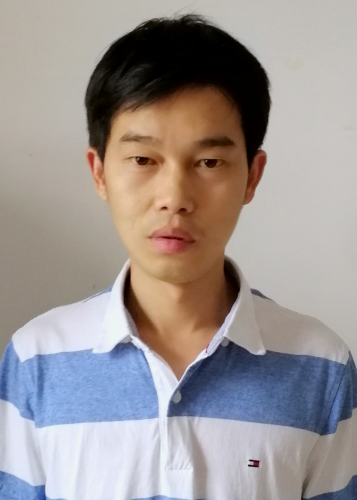

|  | PhD, Professor |
I am a Professor at Department of Mathematics and Statistics, Huazhong Agricultural University. Previously, I was an Adjunct Research Fellow at University of Pittsburgh, a Postdoctoral Research Fellow at University of Texas at Arlington, an Adjunct Research Fellow at University of Macau, and a Research Assistant at City University of Hong Kong. I received the B.S., M.S, and Ph.D. degrees in Mathematics from Hubei University in 2003, 2006, and 2009, respectively.
My research interests lie in the areas of machine learning and learning theory, with emphasis on the following topics:
Interpretable machine learning (e.g., Sparse additive models, Knockoffs inference)
Generalization theory of machine learning (e.g., Adversarial/Multi-modal Leaning, One-order/Zero-order/Bilevel Optimization, LLM)
Apply and develop machine learning methods to solve real-data analysis problems ( e.g., Smart Agriculture, Space Environment, Computer Vision)
I am recruiting Postdoc, PhD, Master, with high motivation of doing research on trustworthy machine learning and mathematics of data science. If you are interested, please feel free to contact me.
Yutao Hu, Yulong Wang, Libing Wang, Han Li, Hong Chen, Yuan-Yan Tang, Tensor Nuclear Norm based Multi-channel Atomic Representation for Robust Face Recognition， IEEEE Transactions on Image Processing, 2025.
Yuxin Dong, Tieliang Gong, Hong Chen, Shuangyong Song, Weizhan Zhang, Chen Li. How Does Distribution Matching Help Domain Generalization: An Information-theoretic Analysis, IEEE Transactions on Information Theory , 2025, DOI: 10.1109/TIT.2025.3531136
Liyuan Liu, Yaohui Chen, Weifu Li, Yingjie Wang, Bin Gu, Feng Zheng, Hong Chen. Generalization Bounds of Deep Neural Networks With -Mixing Samples, IEEE Transactions on Neural Networks and Learning Systems, 2025, DOI: 10.1109/TNNLS.2025.3526235
Wen Wen, Han Li, Rui Wu, Lingjuan Wu, Hong Chen. Generalization analysis of adversarial pairwise learning. Neural Networks, 2024.
Hong Chen*, Xuelin Zhang, Tieliang Gong, Bin Gu, Feng Zheng. Error Density-dependent Empirical Risk Minimization. Expert Systems With Applications, 2024.
Yutao Hu, Yulong Wang, Han Li, Hong Chen. Robust multi-view learning via M-estimator joint sparse representation. Pattern Recognition, Volume 151, July 2024, 110355.
Liangxi Liu, Feng Zheng, Hong Chen, Guo-Jun Qi, Heng Huang, Ling Shao. A Bayesian Federated Learning Framework with Online Laplace Approximation. IEEE TPAMI, vol. 46, no. 1, pp. 1-16, Jan 2024.
Hao Deng, Yuting Zhong, Hong Chen, Jun Chen, Jingjing Wang, Yanhong Chen, Bingxian Luo. Two-stage Hierarchical Framework for Solar Flare Prediction. The Astrophysical Journal Supplement Series, 268:43 (12pp), 2023.
Yuxin Dong, Tieliang Gong, Hong Chen, Chen Li. Efficient Approximations for Matrix-based Rényi's Entropy on Sequential Data. IEEE Transactions on Neural Networks and Learning Systems, doi: 10.1109/TNNLS.2023.3314089.
Peipei Yuan, Xinge You, Hong Chen, Yingjie Wang, Qinmu Peng, Bin Zou. Sparse Additive Machine With the Correntropy-Induced Loss. IEEE Transactions on Neural Networks and Learning Systems, doi: 10.1109/TNNLS.2023.3280349.
Yulong Wang, Kit Ian Kou, Hong Chen, Yuan Yan Tang, Luoqing Li. Double Auto-weighted Tensor Robust Principal Component Analysis. IEEE Transactions on Image Processing, doi: 10.1109/TIP.2023.3310331.
Libin Wang, Yulong Wang, Hao Deng, Hong Chen. Attention reweighted sparse subspace clustering. Pattern Recognition, Volume 139, 109438, 2023.
Hong Chen, Youcheng Fu, Xue Jiang, Yanhong Chen, Weifu Li, Yicong Zhou, Feng Zheng. Gradient Learning with the Mode-induced Loss: Consistency Analysis and Applications. IEEE Transactions on Neural Networks and Learning Systems (TNNLS), 2023, doi: 10.1109/TNNLS.2023.3236345.
Yuxiang Han, Hong Chen, Tieliang Gong, Jia Cai. Robust Partially Linear Models for Automatic Structure Discovery, Expert Systems with Applications, Volume 217, 1 May 2023, 119528
Linqian Han, Wanshun Zhong, Jia Qian, Minliang Jin, Peng Tian, Wanchao Zhu, Hongwei Zhang, Yonghao Sun, Jia-Wu Feng, Xiangguo Liu, Guo Chen, Babar Farid, Ruonan Li, Zimo Xiong, Zhihui Tian, Juan Li, Zi Luo, Dengxiang Du, Sijia Chen, Qixiao Jin, Jiaxin Li, Zhao Li, Yan Liang, Xiaomeng Jin, Yong Peng, Chang Zheng, Xinnan Ye, Yuejia Yin, Hong Chen, Weifu Li, Ling-Ling Chen, Qing Li, Jianbing Yan, Fang Yang & Lin Li. A multi-omics integrative network map of maize, Nature Genetics, 2023.
Yulong Wang, Kit Ian Kou, Hong Chen, Yuan Yan Tang, Luoqing Li. Simultaneous Robust Matching Pursuit for Multi-view Learning, Pattern Recognition,Volume 134:109100, 2023.
Zhao, Li and Xiaoxuan, Chen and Shaoqiang, Shi and Hongwei, Zhang and Xi, Wang and Hong Chen and Weifu, Li and Lin, Li. DeepBSA: A deep-learning algorithm improves bulked segregant analysis for dissecting complex traits[J]. Molecular Plant, 2022, 15(9): 1418-1427.
Yulong Wang, Yap-Peng Tan, Yuan Yan Tang, Hong Chen, Cuiming Zou, Luoqing Li. Generalized and Discriminative Collaborative Representation for Multiclass Classification, IEEE Transactions on Cybernetics,52(5):2675–2686, 2022.
Tieliang Gong, Yuxin Dong, Hong Chen, Bo Dong, Chen Li. Markov Subsampling Based on Huber Criterion. IEEE Transactions on Neural Networks and Learning Systems, doi: 10.1109/TNNLS.2022.3189069, 2022.
Jun Chen, Hao Deng, Shuxin Li, Weifu Li, Hong Chen, Yanhong Chen, Bingxian Luo. RU-net: A Residual U-net for Automatic Interplanetary Coronal Mass Ejection Detection. The Astrophysical Journal Supplement Series, 259(1):8, 2022.
Hong Chen, Yingjie Wang, Feng Zheng, Cheng Deng, Heng Huang. Sparse modal additive model. IEEE Transactions on Neural Networks and Learning Systems, 32(6): 2373-2387, 2021.
Hong Chen, Changying Guo,Yingjie Wang, Huijuan Xiong. Sparse additive machine with ramp loss. Analysis and Applications, 19(3):509-528, 2021.
Yulong Wang, Yuan Yan Tang, Luoqing Li, Hong Chen. Modal regression based atomic representation for robust face recognition and reconstruction, IEEE Transactions on Cybernetics,50(10):4393–4405, 2020.
Yulong Wang,Yuan-Yan Tang, Luoqing Li, Hong Chen, Jianjia Pan. Atomic representation-based classification: theory, algorithm and applications, IEEE Transactions on Pattern Analysis and Machine Intelligence, 41(1): 6–19, 2019.
Xiaoqian Wang, Hong Chen, Jingwen Yan, Kwangsik Nho, Shannon L Risacher, Andrew J Saykin, Li Shen, Heng Huang. Quantitative trait loci identification for brain endophenotypes via new additive model with random networks, Bioinformatics, 34(17): i866–i874, 2018.
Hong Chen, Yulong Wang. Kernel-based sparse regression with the correntropy-induced loss, Applied and Computational Harmonic Analysis, 44(1): 144–164, 2018.
Tieliang Gong, Zongben Xu, Hong Chen. Generalization analysis of Fredholm kernel regularized classifiers, Neural Computation, 29(7): 1879–1901, 2017.
Yicong Zhou#, Hong Chen#, Rushi Lan, Zhibin Pan. Generalization performance of regularized ranking with multiscale kernels, IEEE Transactions on Neural Networks and Learning Systems, 27: 993-1002, 2016. (#contributed equally)
Hong Chen, Jiangtao Peng, Yicong Zhou, Luoqing Li, Zhibin Pan. Extreme learning machine for ranking: Generalization analysis and applications, Neural Networks, 53: 110-126, 2014.
Hong Chen, Yi Tang, Luoqing Li, Yuan Yuan, Xuelong Li,Yuan Yan Tang, Error analysis of stochastic gradient descent ranking, IEEE Transactions on Cybernetics, 43: 898–909, 2013.
Hong Chen, Zhibin Pan, Luoqing Li, Yuan Yan Tang. Error analysis of coefficient-based regularized algorithm for density-level detection, Neural Computation, 25(4): 1107–1121, 2013.
Hong Chen, Yicong Zhou, Yuan Yan Tang, Luoqing Li, Zhibin Pan, Convergence rate of semi-supervised greedy algorithm, Neural Networks, 44–50, 2013.
Hong Chen. The convergence rate of a regularized ranking algorithm, Journal of Approximation Theory, 164: 1513–1519, 2012.
Hong Chen, Luoqing Li, Jiangtao Peng. Semi-supervised learning based on high density regions estimation, Neural Networks, 23(7): 812–818, 2010.
Hong Chen, Luoqing Li. Semi-supervised multi-category classification with imperfect model, IEEE Transactions on Neural Networks, 20(10): 1594–1603, 2009.
Zhihao Li, Xue Jiang, Liyuan Liu, Xuelin Zhang, Hong Chen, Feng Zheng, On the Generalization Ability of Next-Token-Prediction Pretraining, ICML 2025.
Chang Cao, Han Li, Yulong Wang, Rui Wu, Hong Chen, Adversarial Robust Generalization of Graph Neural Networks, ICML 2025.
Jun Chen, Hong Chen, Yonghua Yu, Yiming Ying, How does Labeling Error Impact Contrastive Learning? A Perspective from Data Dimensionality Reduction, ICML 2025
Chang Cao，Han Li，Yulong Wang，Rui Wu，Hong Chen. Adversarial Training for Graph Convolutional Networks: Stability and Generalization Analysis, IJCAI 2025.
Liyuan Liu, Hong Chen, Weifu Li, Tieliang Gong, Hao Deng, Yulong Wang. Trajectory-Dependent Generalization Bounds for Pairwise Learning with $\varphi$-mixing Samples, IJCAI 2025.
Zirui Hu, Yingjie Wang, Zheng Zhang, Hong Chen, Dacheng Tao. A Statistical Approach for Controlled Training Data Detection, ICLR 2025.
Wen Wen, Han Li, Tieliang Gong, Hong Chen. Towards Generalization Bounds of GCNs for Adversarially Robust Node Classification, ICLR 2025.
Hao Wang, Biqin Song, Hao Deng, Hong Chen. Knockoffs Inference for Partially Linear Models with Automatic Structure Discovery. AAAI 2025.
Jun Chen, Hong Chen, Bin Gu, Guodong Liu, Yingjie Wang, Weifu Li. Error Analysis Affected by Heavy-Tailed Gradients for Non-Convex Pairwise Stochastic Gradient Descent. AAAI 2025.
Jun Chen, Hong Chen, Bin Gu. How Does Black-Box Impact the Learning Guarantee of Stochastic Compositional Optimization? NeurIPS 2024.
Ke Zhang, Ganyu Wang, Han Li, Yulong Wang, Hong Chen, Bin Gu. Asynchronous Vertical Federated Learning for Kernelized AUC Maximization. KDD 2024.
Yuxin Dong, Tieliang Gong, Hong Chen, Zhongjiang He, Mengxiang Li, Shuangyong Song, Chen Li. Towards Generalization beyond Pointwise Learning: A Unified Information-theoretic Perspective. ICML 2024.
Xuelin Zhang, Hong Chen, Bin Gu, Tieliang Gong, Feng Zheng. Fine-grained Analysis of Stability and Generalization for Stochastic Bilevel Optimization, IJCAI 2024.
Wen Wen, Han Li, Tieliang Gong, Hong Chen. Towards Sharper Generalization Bounds for Adversarial Contrastive Learning, IJCAI 2024.
Yuxin Dong, Tieliang Gong, Hong Chen, Shujian Yu, Chen Li. Rethinking Information-theoretic Generalization: Loss Entropy Induced PAC Bounds, ICLR 2024.
Xue Jiang, Feng Liu, Zhen Fang, Hong Chen, Tongliang Liu, Feng Zheng, Bo Han. Negative Label Guided OOD Detection with Pretrained Vision-Language Models, ICLR 2024 (spotlight).
Xinyue Liu, Hualin Zhang, Bin Gu, Hong Chen. General Stability Analysis for Zeroth-Order Optimization Algorithms, ICLR 2024.
Jiahuan Wang, Hong Chen. Towards Stability and Generalization Bounds in Decentralized Minibatch Stochastic Gradient Descent, AAAI 2024.
Jun Chen, Hong Chen, Bin Gu, Hao Deng. Fine-Grained Theoretical Analysis of Federated Zeroth-Order Optimization, NeurIPS 2023.
Yingjie Wang, Hong Chen*, Weifeng Liu, Fengxiang He, Tieliang Gong, Youcheng Fu, Dacheng Tao. Tilted Sparse Additive Models, ICML 2023 (Oral).
Xue Jiang, Feng Liu, Zhen Fang, Hong Chen, Tongliang Liu, Feng Zheng, Bo Han. Detecting Out-of-distribution Data through In-distribution Class Prior, ICML 2023.
Wen Wen, Han Li, Hong Chen, Rui Wu, Lingjuan Wu, Liangxuan Zhu, Generalization bounds for adversarial metric learning, IJCAI, 2023.
Yuxin Dong, Tieliang Gong, Hong Chen, Chen Li, Understanding the Generalization Ability of Deep Learning Algorithms: A Kernelized R\'enyi's Entropy Perspective, IJCAI, 2023.
Jun Chen, Hong Chen, Xue Jiang, Bin Gu, Weifu Li, Tieliang Gong, Feng Zheng, On the Stability and Generalization of Triplet Learning, AAAI, 2023.
Jiahuan Wang, Jun Chen, Hong Chen, Bin Gu, Weifu Li, Xin Tang, Stability-based Generalization Analysis for Pointwise and Pairwise Learning, AAAI, 2023.
Jingxuan Liang, Xuelin Zhang, Hong Chen, Weifu Li, Xin Tang, Stepdown SLOPE for Controlled Feature Selection, AAAI, 2023.
Yuxin Dong, Tieliang Gong, Shujian Yu, Hong Chen, Chen Li, Robust and Fast Measure of Information via Low-rank Representation, AAAI, 2023.
Yingjie Wang, Xianrui Zhong, Fengxiang He, Hong Chen, Dacheng Tao, Huber Additive Models for Non-stationary Time Series Analysis, ICLR, 2022.
Xuebin Zhao, Hong Chen, Yingjie Wang, Weifu Li, Tieliang Gong, Yulong Wang, Feng Zheng. Error-based Knockoffs Inference for Controlled Feature Selection, AAAI, 2022.
Tieliang Gong,Yuxin Dong,Hong Chen,Wei Feng,Bo Dong,Chen Li. Regularized Modal Regression on Markov-dependent Observations: A Theoretical Assessment, AAAI, 2022.
Hong Chen, Yingjie Wang, Yulong Wang, Feng Zheng. Distributed ranking with communications: Approximation analysis and applications, AAAI, 2021.
Yingjie Wang, Hong Chen*, Feng Zheng, Chen Xu, Tieliang Gong.Multi-task additive models for robust estimation and automatic structure discovery, NeurIPS, 2020
Hong Chen*#, Guodong Liu#, Heng Huang. Sparse shrunk additive models, ICML, 2020. (#contributed equally)
Hong Chen, Xiaoqian Wang, Cheng Deng, Heng Huang*. Group sparse additive machine, NIPS, 2017.
Xiaoqian Wang#, Hong Chen#, Dinggang Shen, Heng Huang*. Regularized modal regression with applications in cognitive impairment prediction, NIPS, 2017. (#contributed equally)
Hong Chen, Haifeng Xia, Wendong Cai, Heng Huang*. Error Analysis of Generalized Nystrom Kernel Regression, NIPS, 2016.
Teachers: Yulong Wang (Prof., Ph.D), Weifu Li (Asso. Prof., Ph.D), Han Li(Asso. Prof., Ph.D), Cuiming Zou (Asso. Prof., Ph.D), Zeyu Zhang (Asso. Prof., Ph.D), Hao Deng (Ph.D), Biqing Song (Ph.D)
Ph.D. Students: Yingjie Wang, Jun Chen, Xuelin Zhang, Yutao Hu, Libin Wang, Liyuan Liu, Xinyue Liu, Hao Wu, Liang Zhao
Graduate Course: Data Mining and Modeling, Statistical Learning, Machine Learning
Undergraduate course: Calculus, Linear Algebra, Data Mining
Journals reviewer for IEEE Transactions on Pattern Analysis and Machine Intelligence, IEEE Transactions on Neural Networks and Learning System, Pattern Recognition, Neural Networks, IEEE Transactions on Circuits and Systems II: Express Briefs, Journal of Complexity, Journal of Mathematical Analysis and Applications, Artificial Intelligence in Medicine, Applied Mathematics Letters, Neural Processing Letters, Information Sciences, Neurocomputing, International Journal of Computer Mathematics, etc.
Conference reviewer for NIPS/NeurIPS(2016-2024), ICML(2017-2024),ICLR(2019-2024) AAAI(2017-2024), IJCAI(2019-2024), AISTAT (2024).